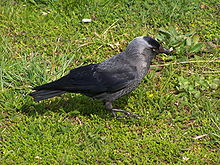

Coloeus
| Coloeus | |
|---|---|
|  | |
| Jackdaw | |
| Scientific classification | |
| Kingdom: | Animalia |
| Phylum: | Chordata |
| Class: | Aves |
| Order: | Passeriformes |
| Family: | Corvidae |
| Genus: | Corvus |
| Subgenus: | Coloeus Pallas, 1766 |
| Species | |
|
C. dauuricus |
|
Coloeus is a subgenus of the bird genus Corvus, the crows and allies. It contains two relatively small species both named as jackdaws.[1] They have a blackish crown, wings and tail, the rest of the plumage being paler.[2]
While some authors consider Coloeus a subgenus of Corvus, others have classified Coloeus as a distinct genus in the family Corvidae.[3] Following Birds of South Asia: The Ripley Guide,[4] the International Ornithological Congress has also reassigned the two jackdaw species from the genus Corvus to the genus Coloeus.[5]
The species are the Western Jackdaw Corvus monedula, which breeds in the British Isles and western Europe, Scandinavia, northern Asia and Northern Africa, and its eastern counterpart, the Daurian Jackdaw Corvus dauuricus, found from eastern Europe to Japan.[2] The eastern species is smaller than the Jackdaw, and in the adult the pale areas of the plumage are almost white, whereas in the western bird these areas are pale grey. The iris is pale in Jackdaw and dark in Daurian Jackdaw. The two species are otherwise very similar in shape, calls and behaviour. There is an argument for lumping the subgenus members as one species, but they do not interbreed where their ranges meet in Mongolia.[2]
[edit] References
- ^ Madge & Burn (1994) vii.
- ^ a b c Madge & Burn (1994) 136-138.
- ^ Haring, E.; Gamauf, A.; Kryukov, A. (2007). "Phylogeographic patterns in widespread corvid birds". Molecular Phylogenetics and Evolution 45 (3): 840–862. doi:10.1016/j.ympev.2007.06.016. PMID 17920300.
- ^ Rasmussen, Pamela C.; Anderton, John C. (2005). Birds of South Asia: The Ripley Guide. Lynx Edicions. ISBN 978-84-87334-67-2.
- ^ Gill, F.; Donsker, D. (eds.). "Vireos, Crows & Allies". IOC World Bird List (version 2.8). Retrieved June 10, 2011.
[edit] Works cited
- Madge, Steve; Burn, Hilary (1994). Crows and Jays: A Guide to the Crows, Jays and Magpies of the World. A & C Black. ISBN 0-7136-3999-7.